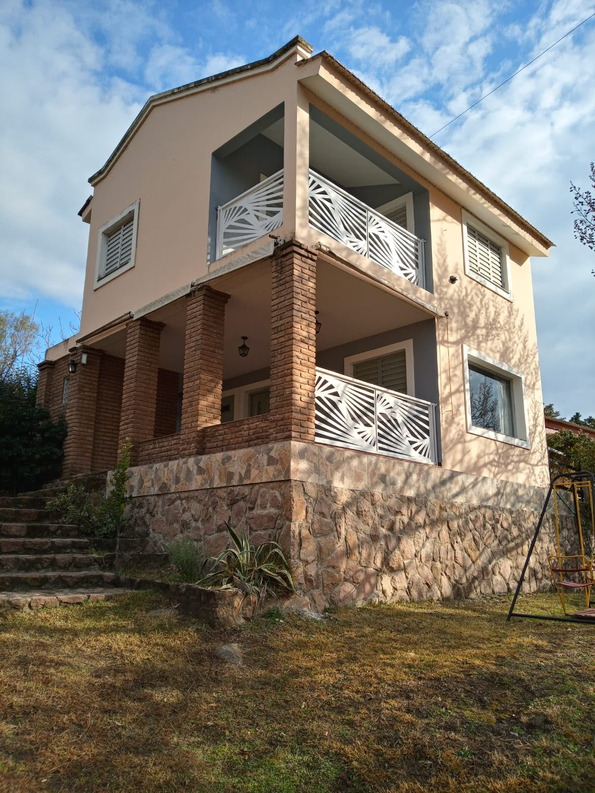
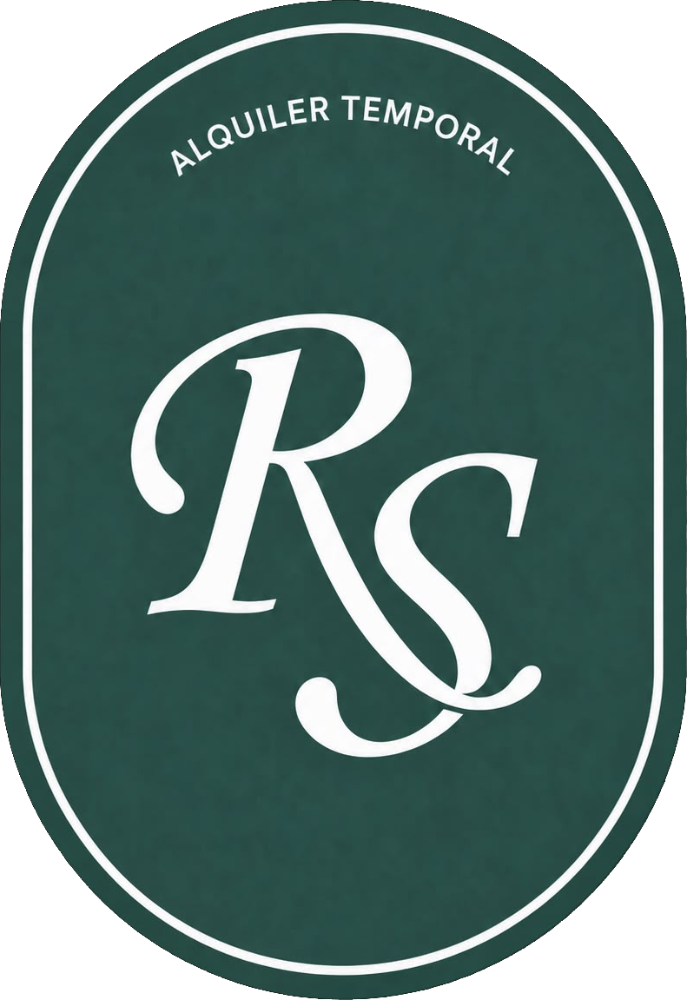
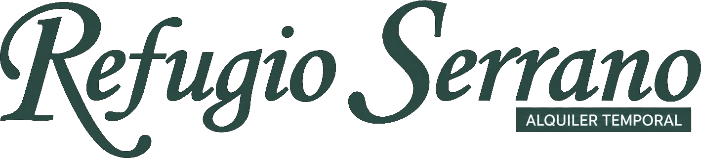

● Villa Icho CruzTala Huasi
Tu refugio entre las sierras
Naturaleza, tranquilidad y comodidades para una escapada a una cuadra del río.
♙Hasta 6huéspedes▱2habitaciones◫2baños≈Piletasin horario♧Mascotaspermitidas